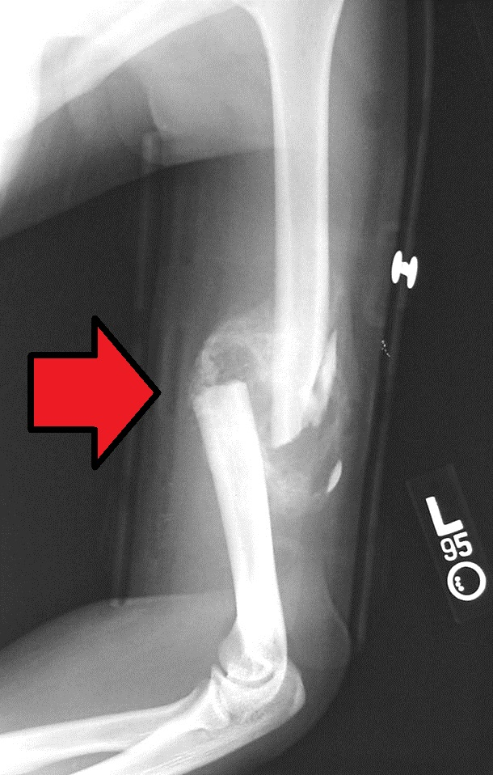

Ficha del catálogo
Callo óseo: Consolidación de fractura
- Sistema
- Óseo
- Modalidad
- RX
- Región
- Húmero
- Dificultad
- Intermedio
Imagen de una fractura diafisaria en fase de consolidación, donde se aprecia el callo óseo formándose alrededor del trazo. Reconocer el callo es fundamental para saber si una fractura está curando en tiempo y forma o si algo va mal.
Técnica
Radiografías seriadas en dos proyecciones, comparando siempre con los estudios previos del mismo paciente. La comparación es más informativa que cualquier imagen aislada.
Qué observar
- Callo perióstico: Hueso nuevo en forma de manguito que rodea el trazo por fuera de la cortical
- Densidad creciente del callo en estudios sucesivos, señal de que se está mineralizando
- Puenteo del trazo: Cuando el callo cruza de un fragmento al otro en al menos tres de cuatro corticales, la fractura se considera consolidada
- Borramiento progresivo de la línea de fractura, que se va haciendo menos nítida
- Signos de alarma: Trazo que sigue nítido y esclerótico a los meses, con extremos redondeados, sugiere seudoartrosis
Hallazgos
Fractura diafisaria del húmero rodeada por abundante callo óseo, hallazgo propio de la fase de reparación.
Perlas
El callo abundante y voluminoso aparece cuando hay algo de movimiento entre los fragmentos (yeso, clavo intramedular). Cuando la fijación es rígida con placas y tornillos, el hueso cura casi sin callo visible: Eso no significa que vaya mal.
Diagnóstico diferencial
- Reacción perióstica por osteomielitis
- La aposición perióstica es irregular, interrumpida o multilaminada y se acompaña de destrucción ósea y secuestros, a diferencia del callo, que es continuo, homogéneo y centrado en el trazo.
- Tumor óseo con reacción perióstica agresiva
- Aparecen patrones de periostio interrumpido, espículas perpendiculares o masa de partes blandas asociada, junto con destrucción de la cortical, hallazgos que no forman parte de la reparación normal.
- Miositis osificante
- La osificación se localiza en el músculo, separada de la cortical por un plano de grasa, y madura desde la periferia hacia el centro, al contrario que el callo, que nace del propio hueso.
- Seudoartrosis
- El trazo permanece nítido y esclerótico con extremos redondeados y sin puente trabecular, incluso cuando existe algo de hueso nuevo alrededor.
- Fractura por estrés en fase de reparación
- Se aprecia engrosamiento cortical focal con una línea de fractura fina, en una localización típica de sobrecarga y sin antecedente traumático mayor.
Simuladores
- Un callo exuberante en fase temprana puede simular una lesión agresiva; la clave es el antecedente traumático, la localización exactamente en el foco y la maduración progresiva en controles seriados.
- La superposición de partes blandas o de vendajes y férulas puede simular densidad periférica (se reconoce porque se extiende más allá del contorno del hueso).
- En fijaciones rígidas con placa el hueso consolida por vía primaria casi sin callo visible, lo que puede interpretarse erróneamente como ausencia de curación.
- El hueso inmaduro del niño remodela con tal rapidez que un trazo antiguo puede desaparecer casi por completo y hacer dudar de si hubo fractura.
Por modalidad
- RX
- Base del seguimiento: Muestra la aparición, la densidad y el puenteo del callo, y permite comparar con estudios previos del mismo paciente.
- TC
- Es la técnica más fiable para confirmar puente óseo real cuando la radiografía es equívoca y para distinguir consolidación de seudoartrosis.
- RM
- Útil para valorar edema medular, tejido fibroso interfragmentario y complicaciones de partes blandas o infección asociada.
- US
- Puede detectar precozmente el callo aún no mineralizado y valorar colecciones vecinas, sobre todo en huesos superficiales.
Protocolo
Radiografías seriadas en dos proyecciones ortogonales centradas en el foco, procurando reproducir la misma angulación y la misma técnica que el estudio previo para que la comparación sea válida. En huesos largos se incluye al menos una articulación vecina. Cuando se emplea tomografía para valorar consolidación se adquieren cortes finos con reconstrucciones en los planos paralelo y perpendicular al eje del hueso, evaluando cada cortical por separado.
Clasificación
El criterio más empleado es la valoración por corticales puenteadas, que considera la fractura consolidada cuando el callo cruza el trazo en al menos tres de las cuatro corticales evaluadas en dos proyecciones. Se complementa con escalas de consolidación que puntúan de forma semicuantitativa la presencia de callo y la visibilidad de la línea de fractura en cada cortical, sumando un valor global que se compara entre controles sucesivos. Además se distingue la consolidación primaria, propia de la fijación rígida y sin callo visible, de la secundaria, con callo perióstico abundante.
Errores frecuentes
- Confundir la fase inflamatoria inicial, en la que el trazo parece más ancho por reabsorción de los extremos, con un desplazamiento o un fracaso de la fijación.
- Diagnosticar seudoartrosis antes de que haya transcurrido el tiempo razonable de consolidación para ese hueso y ese tipo de fijación.
- Interpretar como retardo la ausencia de callo en una osteosíntesis rígida, donde la curación normal ocurre sin callo perióstico.
- Informar consolidación por el simple borramiento del trazo en una sola proyección, sin comprobar el puente en el plano ortogonal.

callo consolidacion fractura curacion humero seudoartrosis reparacion